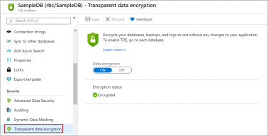
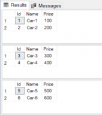
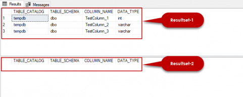
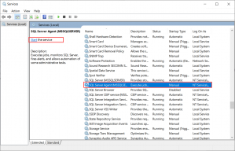
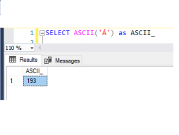
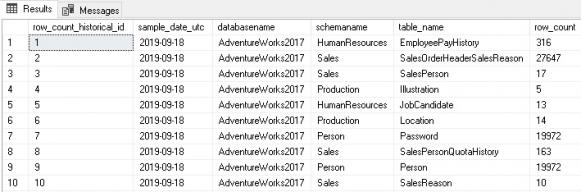

good explication
Also on SQL Shack

Transparent Data Encryption (TDE) on …
In this article, we will review on Transparent Data Encryption (TDE) on an …

SQL While loop: Understanding …
The SQL While loop is used to repeatedly execute a certain piece of SQL …

The Table Variable in SQL Server
In this article, we will explore the table variable in SQL Server with various …

How to fix the “Agent XPs disabled” error
This article explains how we can fix SQL Server error “Agent XPs Disabled”. …
Methods to avoid the SQL divide by zero …
This article explores the SQL divide by zero error and various methods for …

Manage Unicode Characters in Data …
In this article, I’ll provide some useful information to help you understand how …

Using SQL Server Database Metrics to …
Summary Database metrics can be collected, maintained, and used to …